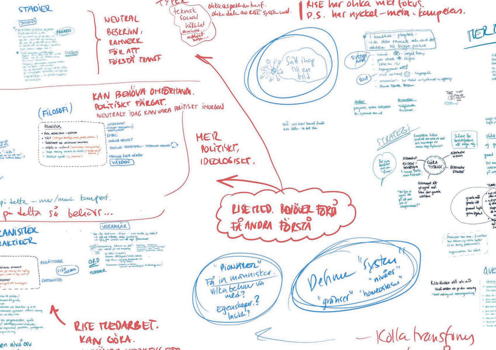

Om boken
Forskarnas guide till Systemisk Transformation
Inspiration, uppslagsverk och inbjudan till handling
Författare
Författare och redaktörer: Lisa Carlgren & Katarina Pietrzak
Övriga medförfattare: Peter Ljungstrand, Martin Börjesson, Nina Bozic, Tisha Hupkes, Martin Mileros, Erik Bakkman, Jessica Dagman, Sara Fallahi
Samt inspel från forskare, designers och utbildare på Prototypande Samhälle, RISE.
Kapitel 2 bygger till stor del på Martin Börjesson och Peter Ljungstrands tankar och föreläsningar, så även kapitel 3 med viktiga bidrag från Nina Bozic.
Läs också Vilka är vi och varför skrev vi handboken? (s. 6).
Medverkande
- Formgivning
- Lisa Carlgren & Tisha Hupkes
- Foto och illustration
- Lisa Carlgren
- Förlag
- RISE Research Institutes of Sweden
- ISBN
- 978-91-90036-39-6
- Tryck
- Exakta Tryckeri Malmö
- Licensierad
- under Creative commons CC-BY https://creativecommons.org/licenses/by/4.0/deed.sv
Bokens sida 297. Den här webbversionen bygger på bokens text och bilder i oförändrad form.
Bollen är i rullning
Missa inte podcast-serien Skiftenas Skifte i fyra avsnitt som innehåller intervjuer med bokens författare och några av de pionjärer som citerats här. Se QR-kod (eller exempelvis Spotify). Poddarna och boken kan gärna användas i studiecirklar.
Boken finns även i PDF-version för nedladdning, och vi har samlat länkar till bok och poddar på samma webbsida. Använd gärna sidor ur boken när du själv vill förklara för andra (med referens till oss såklart).
Har du läst eller fått bokens första utgåva (augusti 2025) och undrar vad som har ändrats?
Inte mycket. Boken har fått ny undertitel för att tydliggöra hur den kan användas, och innehållsförteckningen har lagts i pärmens insida. Ett par sidor i bokens första del har bytt plats för att skapa en smidigare ingång till temat och innehållet. Sidorna 79-81 har fått tydligare illustrationer, och på ett par sidor har det tillkommit ett foto. Sammantaget har detta påverkat sid-numreringen något. Vi har också lyft ut några av exemplen i kapitel åtta till en separat PDF (samma QR-kod).
PS: Typisk fråga (som vi inte fått men själva undrat): Varför har ni skapat en bok som är så stor?
Visst är den mer släpbar än bärbar, men vi har börjat tycka om hur den på något sätt kräver sin plats och inte skäms för sitt omfång! Det är ett komplext område som man kan närma sig från så många olika vinklar. Vi har fått återberättat hur boken används på arbetsplatser där den stimulerar till oväntade samtal när någon sida bläddras upp på måfå - kanske sker detta just för att den tar plats.
Vår uppmaning för att sätta bollen i rullning är därför att placera boken strategiskt! Någonstans där man inte kan låta bli att interagera med den, där medarbetare har lite tid för spontan eftertanke. Kanske vid den mest nersuttna soffan, eller mikrovågsugnen. Vi önskar många tänkvärda stunder!
